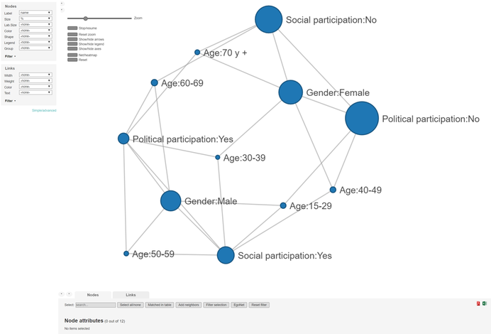
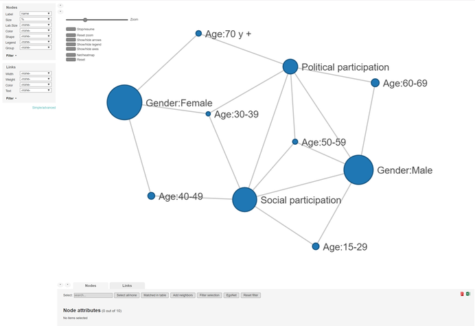
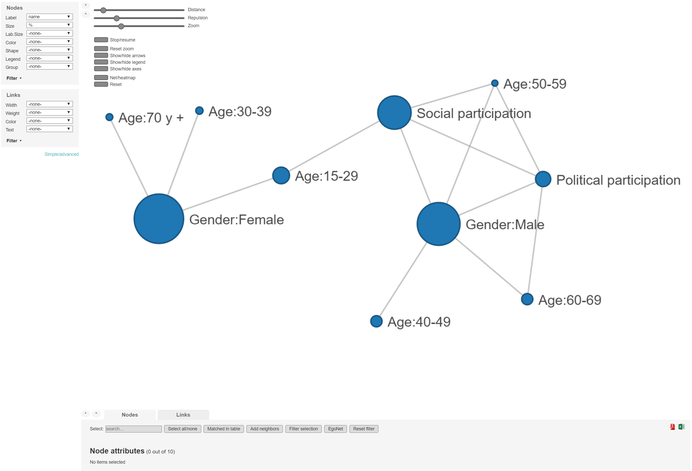
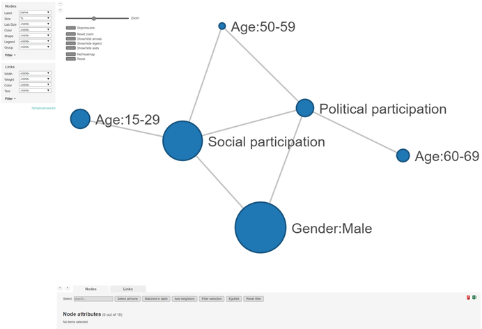

The function surCoin(), starting from a data frame, generates a list (an object of class netCoin) containing the nodes, links, and options resulting from the coincidence analysis. This object can be plotted to generate an interactive graph.
For this example we will use the ess sample data which is loaded with the package. This data frame contains a simple random sample of 1,000 people with a small subset of the variables from the 8th round of the European Social Survey (ESS) in Europe:
head(ess) #> Gender Age Social participation Political participation cweight #> 1 Male 70 and + No No 2.0248654 #> 2 Male 60-69 No No 0.3356693 #> 3 Female 70 and + No No 1.7896714 #> 4 Female 60-69 Yes Yes 0.3704806 #> 5 Male 15-29 Yes No 0.2881183 #> 6 Female 40-49 No No 0.7965410
The most simple way to run a coincidence analysis is to use surCoin() including the data and a vector (set) with the names of the variables to be used in the analysis. In this case we add Gender, Age, Social participation and Political participation:
set <- c("Social participation", "Political participation", "Gender", "Age") essCoin <- surCoin(data = ess, variables = set) essCoin #> #> Nodes(12): #> name % variable #> Social participation:No 60.08024 Social participation #> Social participation:Yes 39.91976 Social participation #> Political participation:No 72.21665 Political participation #> Political participation:Yes 27.78335 Political participation #> Gender:Female 53.56068 Gender #> Gender:Male 46.43932 Gender #> ... #> #> Links(24): #> Source Target Haberman p(Z) #> Social participation:No Political participation:No 11.755060 0.00000000 #> Social participation:No Gender:Female 1.837566 0.03321192 #> Social participation:No Age:60-69 2.053822 0.02012663 #> Social participation:No Age:70 and + 1.673124 0.04730833 #> Social participation:Yes Political participation:Yes 11.755060 0.00000000 #> Social participation:Yes Gender:Male 1.837566 0.03321192 #> ...
An interactive plot of the coincidence analysis can be produced using the plot() function. Note that the output is an html page that will open in the default browser.
plot(essCoin)

For binary variables we may want to represent only one category and hide the counterpart. For instance, the variable about social participation (Social participation) has two categories and we want just to represent the cases who have participated socially:
essCoin <- surCoin(data = ess, variables = set, dichotomies = c("Social participation", "Political participation"), valueDicho = "Yes" ) plot(essCoin)

surCoin() allows for the use of weights. Also different procedures can be used to assess the strength of the coincidences, the default is haberman or adjusted residuals. A full list of the measures available can be found in the function specification. In this case we will set the weight to cweight and ask for three different measures: frequencies (f), Conditional relative frequencies (i) and adjusted residuals (h).
essCoin <- surCoin(data = ess, variables = set, dichotomies = c("Social participation", "Political participation"), valueDicho = "Yes", weight = "cweight", procedures = c("f", "i", "h"), ) plot(essCoin)

Some aspects of the output can be customised, for example, we may want to use the argument exogenous to exclude the relationships amongst the categories of a variable or supress those categories without any relation with others with the argument degreeFilter. In this case we will set gender (Gender) and age (Age) as exogenous.
essCoin <- surCoin(data = ess, variables = set, dichotomies = c("Social participation", "Political participation"), valueDicho = "Yes", weight = "cweight", procedures = c("f", "i", "h"), exogenous = c("Gender", "Age"), degreeFilter = 1, ) plot(essCoin)

To customise the coincidence analysis you can use any of the netCoin() arguments. Even more you can use the netCoin function with the previous essCoin object as input, instead of data and variables. For instance, we may want to use the aesthetics color to differentiate the nodes. Each node will take a different fill color if we set the argument color to the variable "name". In addition, we can also establish the size of the nodes based on the relative freqencies, to do this the argument size must equal "%" The variable name in the nodes dataset refers to the name of each node, a combination of the variable name and the category. You can access the nodes data frame from the surCoin object:
essCoin <- netCoin(essCoin, color = "variable", size = "%") print(essCoin$nodes[1:5,], row.names=FALSE) plot(essCoin)
You may want to save the output of surCoin() or transform the object to be used in igraph.
To save the output we use the argument dir to set the directory where we want the html page to be stored.
essCoin <- netCoin(essCoin, dir = "./temp/ess/" )
Finally, if you wanted to generate an igraph object , you could use the function toIgraph applied to the netCoin object, named essCoin in this example.
essCoin.igraph <- toIgraph(essCoin)